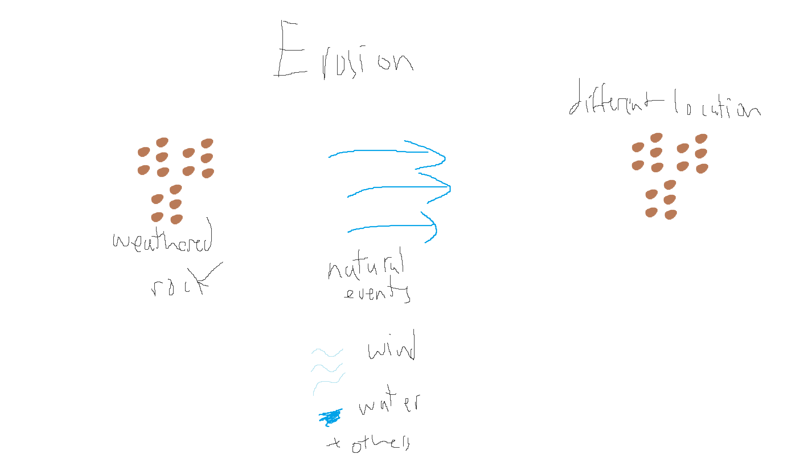

Weathering
Definition: The process by which rocks and other geological materials are broken down into smaller particles and substances by exposure to nature such as water and wind.
Erosion
Definition: Erosion is the process by which soil and rock materials are removed from one place and transported to another by natural actions like water, wind etc.
Deposition
Definition: Deposition is the process by which weathered rocks are dropped or settled in a new location after being transported by nature (water, wind etc.)
Weathering is the breaking down of rocks. This can happen physically and chemically. Physically can happen when precipitation like water, snow, and hail break down the rock. Chemically can happen when substances break down the rock like water and limestone reacting and breaking down.
Erosion is the process of weathered rock getting transported to another place by natural events. Some natural events are liquid water, wind, or ice. Water can wash away small sediments that were broken down by weathering. Wind can also blow or slowly move the sediments to a different location. Weathered rock can be moved by glaciers by just being pushed by the ice.
Deposition is when erosion deposits the weathered rock to a location. Erosion and deposition are very similar but deposition is the event when erosion finally deposits the weathered rock into a new location. (no picture for this one)